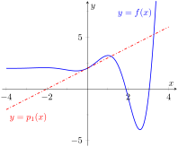
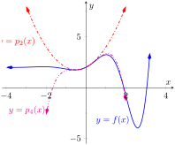
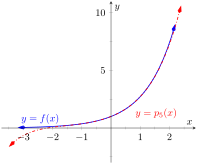
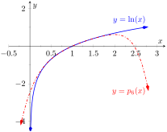
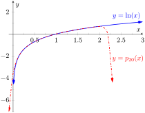
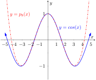
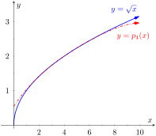

Consider a function \(y=f(x)\) and a point \(\big(c,f(c)\big)\text{.}\) The derivative, \(\fp(c)\text{,}\) gives the instantaneous rate of change of \(f\) at \(x=c\text{.}\) Of all lines that pass through the point \(\big(c,f(c)\big)\text{,}\) the line that best approximates \(f\) at this point is the tangent line; that is, the line whose slope (rate of change) is \(\fp(c)\text{.}\)
In Figure 9.7.1, we see a function \(y=f(x)\) graphed. The table in Table 9.7.2 shows that \(f(0)=2\) and \(\fp(0) = 1\text{;}\) therefore, the tangent line to \(f\) at \(x=0\) is \(p_1(x) = 1(x-0)+2 = x+2\text{.}\) The tangent line is also given in the figure. Note that “near” \(x=0\text{,}\)\(p_1(x) \approx f(x)\text{;}\) that is, the tangent line approximates \(f\) well.
Figure9.7.1.A graph of \(f(x)\) and its tangent line at \(0\)
Table9.7.2.Derivatives of \(f\) evaluated at \(0\)
\(f(0) = 2\)
\(\fp''(0) = -1\)
\(\fp(0) = 1\)
\(f^{(4)}(0)=-12\)
\(\fpp(0) = 2\)
\(f^{(5)}(0)=-19\)
One shortcoming of this approximation is that the tangent line only matches the slope of \(f\text{;}\) it does not, for instance, match the concavity of \(f\text{.}\) We can find a polynomial, \(p_2(x)\text{,}\) that does match the concavity near \(0\) without much difficulty, though. The table in Table 9.7.2 gives the following information:
This is simply an initial-value problem. We can solve this using the techniques first described in Section 5.1. To keep \(p_2(x)\) as simple as possible, we'll assume that not only \(p_2''(0)=2\text{,}\) but that \(p_2''(x)=2\text{.}\) That is, the second derivative of \(p_2\) is constant, meaning \(p_2\) is a quadratic function.
If \(p_2''(x) = 2\text{,}\) then \(p_2'(x) = 2x+C\) for some constant \(C\text{.}\) Since we have determined that \(p_2'(0) = 1\text{,}\) we find that \(C=1\) and so \(p_2'(x) = 2x+1\text{.}\) Finally, we can compute \(p_2(x) = x^2+x+C\text{.}\) Using our initial values, we know \(p_2(0) = 2\) so \(C=2\text{.}\) We conclude that \(p_2(x) = x^2+x+2\text{.}\) This function is plotted with \(f\) in Figure 9.7.3.
We can repeat this approximation process by creating polynomials of higher degree that match more of the derivatives of \(f\) at \(x=0\text{.}\) In general, a polynomial of degree \(n\) can be created to match the first \(n\) derivatives of \(f\text{.}\)Figure 9.7.3 shows \(p_4(x)= -x^4/2-x^3/6+x^2+x+2\text{,}\) whose first four derivatives at 0 match those of \(f\text{.}\) (Using the table in Table 9.7.2, start with \(p_4^{(4)}(x)=-12\) and solve the related initial-value problem.)

Figure9.7.3.Plotting \(f\text{,}\)\(p_2\) and \(p_4\)
As we use more and more derivatives, our polynomial approximation to \(f\) gets better and better. In this example, the interval on which the approximation is “good” gets bigger and bigger. Figure 9.7.4 shows \(p_{13}(x)\text{;}\) we can visually affirm that this polynomial approximates \(f\) very well on \([-2,3]\text{.}\) (The polynomial \(p_{13}(x)\) is not particularly “nice”. It is
The polynomials we have created are examples of Taylor polynomials, named after the British mathematician Brook Taylor who made important discoveries about such functions. While we created the above Taylor polynomials by solving initial-value problems, it can be shown that Taylor polynomials follow a general pattern that make their formation much more direct. This is described in the following definition.
A special case of the Taylor polynomial is the Maclaurin polynomial, where \(c=0\text{.}\) That is, the Maclaurin polynomial of degree \(n\) of \(f\) is
We start with creating a table of the derivatives of \(e^x\) evaluated at \(x=0\text{.}\) In this particular case, this is relatively simple, as shown in Table 9.7.7.
Table9.7.7.The derivatives of \(f(x)=e^x\) evaluated at \(x=0\)
\(f(x) = e^x\)
\(\Rightarrow\)
\(f(0) = 1\)
\(\fp(x) = e^x\)
\(\Rightarrow\)
\(\fp(0) = 1\)
\(\fp'(x) = e^x\)
\(\Rightarrow\)
\(\fp'(0) = 1\)
\(\,\vdots\)
\(\,\vdots\)
\(f\,^{(n)}(x) = e^x\)
\(\Rightarrow\)
\(f\,^{(n)}(0) = 1\)
By the definition of the Maclaurin polynomial, we have
To approximate the value of \(e\text{,}\) note that \(e = e^1 = f(1) \approx p_5(1)\text{.}\) It is very straightforward to evaluate \(p_5(1)\text{:}\)
A plot of \(f(x)=e^x\) and \(p_5(x)\) is given in Figure 9.7.8. To \(5\) decimal places, the actual value of \(e\) is \(2.71828\text{.}\) So this approximation agrees to two decimal places.

Figure9.7.8.A plot of \(f(x)=e^x\) and its 5\(^{th}\) degree Maclaurin polynomial \(p_5(x)\)
Example9.7.9.Finding and using Taylor polynomials.
Find the \(n\)th Taylor polynomial of \(y=\ln(x)\) at \(x=1\text{.}\)
Use \(p_6(x)\) to approximate the value of \(\ln(1.5)\text{.}\)
Use \(p_6(x)\) to approximate the value of \(\ln(2)\text{.}\)
We begin by creating a table of derivatives of \(\ln(x)\) evaluated at \(x=1\text{.}\) While this is not as straightforward as it was in the previous example, a pattern does emerge (for \(n\ge 1\)), as shown in Table 9.7.10. Notice in the table below that each time we take a derivative (starting at the second derivative), we apply the power rule and “bring down” the exponent to multiply by the previous coefficent. So the \(6\) in the \(4^{th}\) derivative is actually \(1\cdot 2\cdot 3=3!\text{.}\)
Table9.7.10.Derivatives of \(\ln(x)\) evaluated at \(x=1\)
\(f(x) = \ln(x)\)
\(\Rightarrow\)
\(f(1) = 0\)
\(\fp(x) = \frac{1}{x}\)
\(\Rightarrow\)
\(\fp(1) = 1\)
\(\fp'(x) = -\frac{1}{x^2}\)
\(\Rightarrow\)
\(\fp'(1) = -1\)
\(\fp''(x) = \frac{2}{x^3}\)
\(\Rightarrow\)
\(\fp''(1) = 2\)
\(f^{(4)}(x) = -\frac{6}{x^4}\)
\(\Rightarrow\)
\(f^{(4)}(1) = -6\)
\(\,\vdots\)
\(\,\vdots\)
\(f^{(n)}(x) =\)
\(\Rightarrow\)
\(f^{(n)}(1) =\)
\(\frac{(-1)^{n+1}(n-1)!}{x^n}\)
\(\!\!(-1)^{n+1}(n-1)!\)
Notice that the coefficients alternate in sign starting at \(n=1\text{.}\) Using Definition 9.7.5, we have
This is a good approximation as a calculator shows that \(\ln(1.5) \approx 0.4055\text{.}\)Figure 9.7.11 below plots \(y=\ln(x)\) with \(y=p_6(x)\text{.}\) We can see that \(\ln(1.5) \approx p_6(1.5)\text{.}\)
This approximation is not terribly impressive: a hand held calculator shows that \(\ln(2) \approx 0.693147\text{.}\) The graph in Figure 9.7.11 shows that \(p_6(x)\) provides less accurate approximations of \(\ln(x)\) as \(x\) gets close to 0 or 2. Surprisingly enough, even the \(20\)th degree Taylor polynomial fails to approximate \(\ln(x)\) for \(x\gt 2\) very well, as shown in Figure 9.7.12. We'll soon discuss why this is.
Figure9.7.11.A plot of \(y=\ln(x)\) and its 6th degree Taylor polynomial at \(x=1\)
Figure9.7.12.A plot of \(y=\ln(x)\) and its 20\(^{th} \) degree Taylor polynomial at \(x=1\)
Taylor polynomials are used to approximate functions \(f(x)\) in mainly two situations:
When \(f(x)\) is known, but perhaps “hard” to compute directly. For instance, we can define the cosine of an angle as either the ratio of sides of a right triangle (“adjacent over hypotenuse”) or using the definition in terms of the unit circle. However, neither of these provides a convenient way of computing \(\cos(2)\text{.}\) A Taylor polynomial of sufficiently high degree can provide a reasonable method of computing such values using only operations usually hard-wired into a computer (\(+\text{,}\)\(-\text{,}\)× and \(\div\)).
When \(f(x)\) is not known, but information about its derivatives is known. This occurs more often than one might think, especially in the study of differential equations.
In both situations, a critical piece of information to have is “How good is my approximation?” If we use a Taylor polynomial to compute \(\cos(2)\text{,}\) how do we know how accurate the approximation is?
We had the same problem when studying Numerical Integration. Theorem 5.5.24 provided bounds on the error when using, say, Simpson's Rule to approximate a definite integral. These bounds allowed us to determine that, for instance, using \(10\) subintervals provided an approximation within \(\pm 0.01\) of the exact value. The following theorem gives similar bounds for Taylor (and hence Maclaurin) polynomials.
Theorem9.7.13.Taylor's Theorem.
Let \(f\) be a function whose \((n+1)\text{th }\) derivative exists on an interval \(I\) and let \(c\) be in \(I\text{.}\) Then, for each \(x\) in \(I\text{,}\) there exists \(z_x\) between \(x\) and \(c\) such that
where \(\ds R_n(x) = \frac{f^{(n+1)}(z_x)}{(n+1)!}(x-c)^{(n+1)}\text{.}\)
\(\ds \abs{R_n(x)} \leq \frac{\max\abs{\,f^{(n+1)}(z)}}{(n+1)!}\abs{(x-c)^{(n+1)}}\text{,}\) where \(z\) is in \(I\text{.}\)
The first part of Taylor's Theorem states that \(f(x) = p_n(x) + R_n(x)\text{,}\) where \(p_n(x)\) is the \(n\)th order Taylor polynomial and \(R_n(x)\) is the remainder, or error, in the Taylor approximation. The second part gives bounds on how big that error can be. If the \((n+1)\)th derivative is large on \(I\text{,}\) the error may be large; if \(x\) is far from \(c\text{,}\) the error may also be large. However, the \((n+1)!\) term in the denominator tends to ensure that the error gets smaller as \(n\) increases.
The following example computes error estimates for the approximations of \(\ln(1.5)\) and \(\ln(2)\) made in Example 9.7.9.
Example9.7.14.Finding error bounds of a Taylor polynomial.
Use Theorem 9.7.13 to find error bounds when approximating \(\ln(1.5)\) and \(\ln(2)\) with \(p_6(x)\text{,}\) the Taylor polynomial of degree 6 of \(f(x)=\ln(x)\) at \(x=1\text{,}\) as calculated in Example 9.7.9.
We start with the approximation of \(\ln(1.5)\) with \(p_6(1.5)\text{.}\) The theorem references an open interval \(I\) that contains both \(x\) and \(c\text{.}\) The smaller the interval we use the better; it will give us a more accurate (and smaller!) approximation of the error. We let \(I = (0.9,1.6)\text{,}\) as this interval contains both \(c=1\) and \(x=1.5\text{.}\) The theorem references \(\max\abs{f^{(n+1)}(z)}\text{.}\) In our situation, this is asking “How big can the \(7\)th derivative of \(y=\ln(x)\) be on the interval \((0.9,1.6)\text{?}\)” The seventh derivative is \(y = -6!/x^7\text{.}\) The largest absolute value it attains on \(I\) is about 1506. (There are no critical numbers of \(f^{(7)}\) in the interval so we evaluate the endpoints: \(f^{(7)}(0.9)\approx 1506\) and \(f^{(7)}(1.6)\approx 27\text{.}\)) In particular, we are evaluating at \(x=1.5\text{,}\) so we let \(x=1.5\text{.}\) Thus we can bound the error as:
We computed \(p_6(1.5) = 0.404688\text{;}\) using a calculator, we find \(\ln(1.5) \approx 0.405465\text{,}\) so the actual error is about \(0.000778\text{,}\) which is less than our bound of \(0.0023\text{.}\) This affirms Taylor's Theorem; the theorem states that our approximation would be within about 2 thousandths of the actual value, whereas the approximation was actually closer. Taylor's Theorem only gives an upper bound on the error.
We again find an interval \(I\) that contains both \(c=1\) and \(x=2\text{;}\) we choose \(I = (0.9,2.1)\text{.}\) The maximum value of the seventh derivative of \(f\) on this interval is again about 1506 (as the largest values come near \(x=0.9\)). Thus
This bound is not as nearly as good as before. Using the degree 6 Taylor polynomial at \(x =1\) will bring us within 0.3 of the correct answer. As \(p_6(2)\approx 0.61667\text{,}\) our error estimate guarantees that the actual value of \(\ln(2)\) is somewhere between \(0.31667\) and \(0.91667\text{.}\) These bounds are not particularly useful. In reality, our approximation was only off by about 0.07. However, we are approximating ostensibly because we do not know the real answer. In order to be assured that we have a good approximation, we would have to resort to using a polynomial of higher degree.
We practice again. This time, we use Taylor's theorem to find \(n\) that guarantees our approximation is within a certain amount.
Example9.7.15.Finding sufficiently accurate Taylor polynomials.
Find \(n\) such that the \(n\)th Taylor polynomial of \(f(x)=\cos(x)\) at \(x=0\) approximates \(\cos(2)\) to within \(0.001\) of the actual answer. What is \(p_n(2)\text{?}\)
Following Taylor's theorem, we need bounds on the size of the derivatives of \(f(x)=\cos(x)\text{.}\) In the case of this trigonometric function, this is easy. All derivatives of cosine are \(\pm \sin(x)\) or \(\pm \cos(x)\text{.}\) In all cases, these functions are never greater than 1 in absolute value. We want the error to be less than \(0.001\text{.}\) To find the appropriate \(n\text{,}\) consider the following inequalities:
We find an \(n\) that satisfies this last inequality with trial-and-error. When \(n=8\text{,}\) we have \(\ds \frac{2^{8+1}}{(8+1)!} \approx 0.0014\text{;}\) when \(n=9\text{,}\) we have \(\ds \frac{2^{9+1}}{(9+1)!} \approx 0.000282 \lt 0.001\text{.}\) Thus we want to approximate \(\cos(2)\) with \(p_9(2)\text{.}\)
We now set out to compute \(p_9(x)\text{.}\) We again need a table of the derivatives of \(f(x)=\cos(x)\) evaluated at \(x=0\text{.}\) A table of these values is given in Table 9.7.16.
Table9.7.16.A table of the derivatives of \(f(x)=\cos(x)\) evaluated at \(x=0\)
\(f(x) = \cos(x)\)
\(\Rightarrow\)
\(f(0) = 1\)
\(\fp(x) = -\sin(x)\)
\(\Rightarrow\)
\(\fp(0) = 0\)
\(\fp'(x) = -\cos(x)\)
\(\Rightarrow\)
\(\fp'(0) = -1\)
\(\fp''(x) = \sin(x)\)
\(\Rightarrow\)
\(\fp''(0) = 0\)
\(f^{(4)}(x) = \cos(x)\)
\(\Rightarrow\)
\(f^{(4)}(0) = 1\)
\(f^{(5)}(x) = -\sin(x)\)
\(\Rightarrow\)
\(f^{(5)}(0) = 0\)
\(f^{(6)}(x) = -\cos(x)\)
\(\Rightarrow\)
\(f^{(6)}(0) = -1\)
\(f^{(7)}(x) = \sin(x)\)
\(\Rightarrow\)
\(f^{(7)}(0) = 0\)
\(f^{(8)}(x) = \cos(x)\)
\(\Rightarrow\)
\(f^{(8)}(0) = 1\)
\(f^{(9)}(x) = -\sin(x)\)
\(\Rightarrow\)
\(f^{(9)}(0) = 0\)
Notice how the derivatives, evaluated at \(x=0\text{,}\) follow a certain pattern. All the odd powers of \(x\) in the Taylor polynomial will disappear as their coefficient is \(0\text{.}\) While our error bounds state that we need \(p_9(x)\text{,}\) our work shows that this will be the same as \(p_8(x)\text{.}\)
Since we are forming our polynomial at \(x=0\text{,}\) we are creating a Maclaurin polynomial, and:
Our error bound guarantee that this approximation is within \(0.001\) of the correct answer. Technology shows us that our approximation is actually within about \(0.0003\) of the correct answer.
Figure 9.7.17 shows a graph of \(y=p_8(x)\) and \(y=\cos(x)\text{.}\) Note how well the two functions agree on about \((-\pi,\pi)\text{.}\)

Figure9.7.17.A graph of \(f(x)= \cos(x)\) and its degree 8 Maclaurin polynomial
Example9.7.18.Finding and using Taylor polynomials.
Find the degree 4 Taylor polynomial, \(p_4(x)\text{,}\) for \(f(x)=\sqrt{x}\) at \(x=4\text{.}\)
Use \(p_4(x)\) to approximate \(\sqrt{3}\text{.}\)
Find bounds on the error when approximating \(\sqrt{3}\) with \(p_4(3)\text{.}\)
As \(p_4(x) \approx \sqrt{x}\) near \(x=4\text{,}\) we approximate \(\sqrt{3}\) with \(p_4(3) = 1.73212\text{.}\)
To find a bound on the error, we need an open interval that contains \(x=3\) and \(x=4\text{.}\) We set \(I = (2.9,4.1)\text{.}\) The largest value the fifth derivative of \(f(x)=\sqrt{x}\) takes on this interval is near \(x=2.9\text{,}\) at about \(0.0273\text{.}\) (We often graph the \((n+1)^{th}\) derivative to find its extrema. In this case is \(f^{(5)}(x)=105/(32x^{9/2})\) is always decreasing, so the maximum occurs at \(2.9\text{.}\)) Thus
This shows our approximation is accurate to at least the first 2 places after the decimal. (It turns out that our approximation is actually accurate to 4 places after the decimal.) A graph of \(f(x)=\sqrt x\) and \(p_4(x)\) is given in Figure 9.7.20. Note how the two functions are nearly indistinguishable on \((2,7)\text{.}\)

Figure9.7.20.A graph of \(f(x)=\sqrt{x}\) and its degree 4 Taylor polynomial at \(x=4\)
Our final example gives a brief introduction to using Taylor polynomials to solve differential equations.
Example9.7.21.Approximating an unknown function.
A function \(y=f(x)\) is unknown save for the following two facts.
\(y(0) = f(0) = 1\text{,}\) and
\(\displaystyle y'= y^2\)
(This second fact says that amazingly, the derivative of the function is actually the function squared!)
Find the degree 3 Maclaurin polynomial \(p_3(x)\) of \(y=f(x)\text{.}\)
One might initially think that not enough information is given to find \(p_3(x)\text{.}\) However, note how the second fact above actually lets us know what \(y'(0)\) is:
Since \(y(0) = 1\text{,}\) we conclude that \(y'(0) = 1\text{.}\)
Now we find information about \(y''\text{.}\) Starting with \(y'=y^2\text{,}\) take derivatives of both sides, with respect to \(x\). That means we must use implicit differentiation.
Figure9.7.22.A graph of \(y=-1/(x-1)\) and \(y=p_3(x)\) from Example 9.7.21
It turns out that the differential equation we started with, \(y'=y^2\text{,}\) where \(y(0)=1\text{,}\) can be solved without too much difficulty:
\begin{equation*}
y = \frac{1}{1-x}\text{.}
\end{equation*}
Figure 9.7.22 shows this function plotted with \(p_3(x)\text{.}\) Note how similar they are near \(x=0\text{.}\)
It is beyond the scope of this text to pursue error analysis when using Taylor polynomials to approximate solutions to differential equations. This topic is often broached in introductory Differential Equations courses and usually covered in depth in Numerical Analysis courses. Such an analysis is very important; one needs to know how good their approximation is. We explored this example simply to demonstrate the usefulness of Taylor polynomials.
Most of this chapter has been devoted to the study of infinite series. This section has taken a step back from this study, focusing instead on finite summation of terms. In the next section, we explore Taylor Series, where we represent a function with an infinite series.
ExercisesExercises
Terms and Concepts
1.
What is the difference between a Taylor polynomial and a Maclaurin polynomial?
2.
True or False? In general, \(p_n(x)\) approximates \(f(x)\) better and better as \(n\) gets larger.
True
False
3.
For some function \(f(x)\text{,}\) the Maclaurin polynomial of degree 4 is \(p_4(x) = 6+3x-4x^2+5x^3-7x^4\text{.}\) What is \(p_2(x)\text{?}\)
\(p_2(x)=\)
4.
For some function \(f(x)\text{,}\) the Maclaurin polynomial of degree 4 is \(p_4(x) = 6+3x-4x^2+5x^3-7x^4\text{.}\) What is \(\fpp'(0)\text{?}\)
\(\fpp'(0)=\)
Problems
Exercise Group.
In the following exercises, find the Maclaurin polynomial of degree \(n\) for the given function.
5.
Find the Maclaurin polynomial of degree \(n=3\) for \(f(x) = e^{-x}\text{.}\)
\(p_3(x)=\)
6.
Find the Maclaurin polynomial of degree \(n=8\) for \(f(x) = \sin(x)\text{.}\)
\(p_8(x)=\)
7.
Find the Maclaurin polynomial of degree \(n=5\) for \(f(x) = x\cdot e^x\text{.}\)
\(p_5(x)=\)
8.
Find the Maclaurin polynomial of degree \(n=6\) for \(f(x) = \tan(x)\text{.}\)
\(p_6(x)=\)
9.
Find the Maclaurin polynomial of degree \(n=4\) for \(f(x) = e^{2x}\text{.}\)
\(p_4(x)=\)
10.
Find the Maclaurin polynomial of degree \(n=4\) for \(\ds f(x) = \frac1{1-x}\text{.}\)
\(p_4(x)=\)
11.
Find the Maclaurin polynomial of degree \(n=4\) for \(\ds f(x) = \frac1{1+x}\text{.}\)
\(p_4(x)=\)
12.
Find the Maclaurin polynomial of degree \(n=7\) for \(\ds f(x) = \frac1{1+x}\text{.}\)
\(p_7(x)=\)
Exercise Group.
In the following exercises, find the Taylor polynomial of degree \(n\text{,}\) at \(x=c\text{,}\) for the given function.
13.
Find the Taylor polynomial for \(f(x) = \sqrt x\) of degree \(n=4\text{,}\) at \(c=1\text{.}\)
\(p_4(x)=\)
14.
Find the degree \(n=4\) Taylor polynomial for \(f(x) = \ln(x+1)\text{,}\) at \(c=1\text{.}\)
\(p_4(x)=\)
15.
Find the degree \(n=6\) Taylor polynomial for \(f(x) = \cos(x)\text{,}\) at \(c=\pi/4\text{.}\)
\(p_6(x)=\)
16.
Find the degree \(n=5\) Taylor poplynomial for \(f(x) = \sin(x)\text{,}\) at \(c=\pi/6\text{.}\)
\(p_5(x)=\)
17.
Find the degree \(n=5\) Taylor poplynomial for \(f(x) = \frac1x\text{,}\) at \(c=2\text{.}\)
\(p_5(x)=\)
18.
Find the degree \(n=8\) Taylor poplynomial for \(\ds f(x) = \frac{1}{x^2}\text{,}\) at \(c=1\text{.}\)
\(p_8(x)=\)
19.
Find the degree \(n=3\) Taylor poplynomial for \(\ds f(x) = \frac{1}{x^2+1}\text{,}\) at \(c=-1\text{.}\)
\(p_3(x)=\)
20.
Find the degree \(n=2\) Taylor polynomial for \(f(x) = x^2\cos(x)\text{,}\) at \(c=\pi\text{.}\)
\(p_2(x)=\)
Exercise Group.
In the following exercises, approximate the function value with the indicated Taylor polynomial and give approximate bounds on the error.
21.
Approximate \(\sin(0.1)\) with the Maclaurin polynomial of degree 3.
22.
Approximate \(\cos(1)\) with the Maclaurin polynomial of degree 4.
23.
Approximate \(\sqrt{10}\) with the Taylor polynomial of degree 2 centered at \(x=9\text{.}\)
24.
Approximate \(\ln(1.5)\) with the Taylor polynomial of degree 3 centered at \(x=1\text{.}\)
Exercise Group.
The following exercises ask for an \(n\) to be found such that \(p_n(x)\) approximates \(f(x)\) within a certain bound of accuracy.
25.
Find \(n\) such that the Maclaurin polynomial of degree \(n\) of \(f(x)= e^x\) approximates \(e\) within \(0.0001\) of the actual value.
26.
Find \(n\) such that the Taylor polynomial of degree \(n\) of \(f(x)= \sqrt x\text{,}\) centered at \(x=4\text{,}\) approximates \(\sqrt 3\) within \(0.0001\) of the actual value.
27.
Find \(n\) such that the Maclaurin polynomial of degree \(n\) of \(f(x)= \cos(x)\) approximates \(\cos(\pi/3)\) within \(0.0001\) of the actual value.
28.
Find \(n\) such that the Maclaurin polynomial of degree \(n\) of \(f(x)= \sin(x)\) approximates \(\cos(\pi)\) within \(0.0001\) of the actual value.
Exercise Group.
In the following exercises, find the \(n\)th term of the indicated Taylor polynomial.
29.
Find a formula for the \(n\)th term of the Maclaurin polynomial for \(f(x)=e^x\text{.}\)
30.
Find a formula for the \(n\)th term of the Maclaurin polynomial for \(f(x)=\cos(x)\text{.}\)
31.
Find a formula for the \(n\)th term of the Maclaurin polynomial for \(f(x)=\sin x\text{.}\)
32.
Find a formula for the \(n\)th term of the Maclaurin polynomial for \(\ds f(x)=\frac{1}{1-x}\text{.}\)
33.
Find a formula for the \(n\)th term of the Maclaurin polynomial for \(\ds f(x)=\frac{1}{1+x}\text{.}\)
34.
Find a formula for the \(n\)th term of the Taylor polynomial for \(\ds f(x)=\ln(x)\) centered at \(x=1\text{.}\)
Exercise Group.
In the following exercises, approximate the solution to the given differential equation with a degree 4 Maclaurin polynomial.